John Harvey Kellogg와 Will Keith Kellogg 형제는 114년 전에 건강한 식단의 중요한 식재료 중 하나인 곡물의 가능성을 발견하고, 구운 옥수수를 플레이크 형태로 만들어 세계 최초로 아침 식사용 시리얼을 선보였습니다. 그 이래 시리얼은 건강한 식단을 위해 전세계 수많은 사람들이 즐겨 찾는 식사가 되었습니다.
Sereal & Nutrition
- 시리얼의 영양
- 씨앗에서 식탁까지
- 영양정보 들여다보기
- 시리얼의 혁신
시리얼의 영양
비타민과 미네랄
건강한 일상을 위하여 우리는 다양한 영양소를 골고루 섭취하는 것
이 중요합니다.
곡물의 장점을 한껏 살린 켈로그 시리얼은 다양하고 풍부한 영양소
를 함유하고 있습니다. 특히 복합 탄수화물과 식이섬유가 풍부하고
지방이 적으며 주요 비타민과 미네랄의 공급도 도와줍니다.
켈로그 시리얼로 하루 동안 필요한 다양한 영양소를 보충하며 풍요
롭고 건강한 일상을 즐겨보세요.
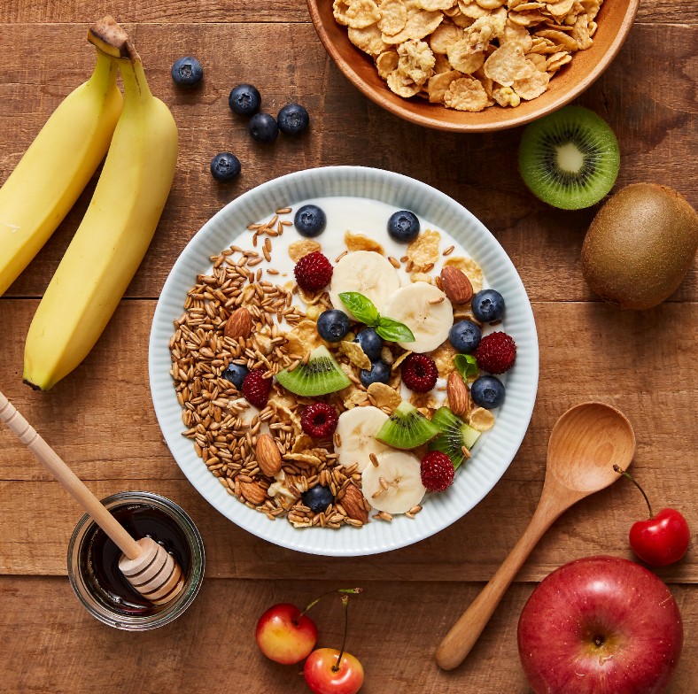
시리얼에 대해 당신이 몰랐던 진실 10가지
-
 1. 시리얼은 여신의 이름이다? - YES
1. 시리얼은 여신의 이름이다? - YES시리얼은 곡물을 의미하는 라틴어 단어 케레알리스(cerealis)에서 파생된 풍요를 상징하는 로마 추수의 여신 세레스(Ceres)에서 유래된 이름입니다. 로마 시대 동안 세레스(Ceres)의 이름은 곡물, 빵과 동의어로 쓰이기도 했다고 합니다.
2. 시리얼은 실수도 탄생한 음식이다? - YES켈로그 창업자인 Will Keith Kellogg와 그의 형 John Harvey Kellogg 박사는 요양원에서 환자들을 위한 식품을 개발하는 과정에서 롤러 압축기에 밀가루를 넣어 놓았다가 우연히 반죽이 건조되어 부서져 탄생한 얇은 밀 푸레이크를 발견했습니다. 이는 뛰어난 맛으로 환자들에게 인기가 좋았고, 시리얼이 탄생하게 된 배경이 되었습니다.
-
3. 시리얼은 튀겨서 만든다? - NO
시리얼은 천연 곡물 그대로의 맛과 향을 살리기 위해 구워서 만들어집니다. 곡물을 수확한 후 찌기, 압착하여 바삭하게 굽기, 다양한 비타민과 무기질을 첨가 후 코팅하고 건조하면 끝! 소화도 잘되고 우유와 곁들여 먹을 때 기름띠도 생기지 않아요.
-
4. 시리얼은 탄수화물 덩어리다? - NO
시리얼은 비타민, 무기질, 식이섬유, 항산화제 등 다양한 영양소를 포함하고 있습니다. 시리얼의 곡물에서 발견되는 천연 항산화 물질과 식이섬유는 전반적인 건강에 도움을 줍니다.
-
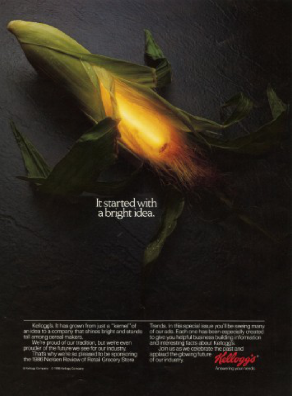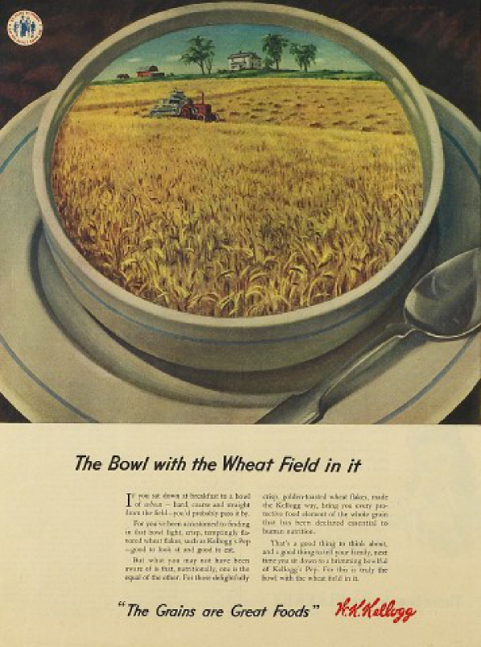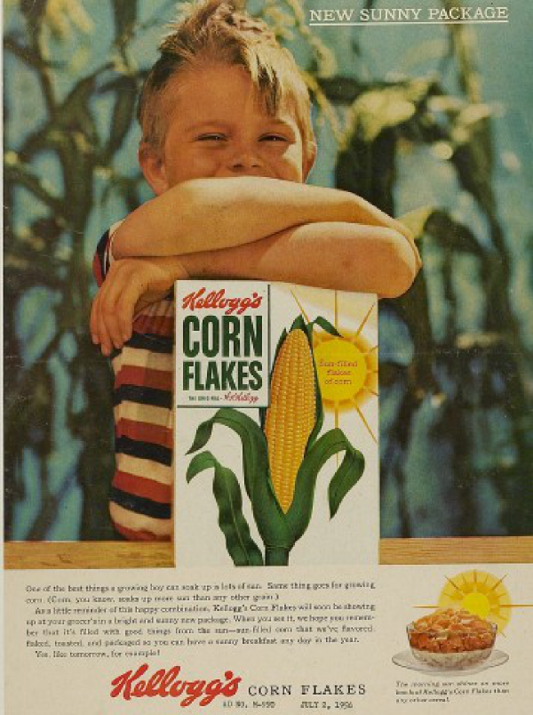
-
5. 시리얼은 서양인 아침 식사다? - NO
시리얼은 한끼 식사로 충분한 맛과 영양을 골고루 갖춘 리얼 푸드로 누구든지 바쁜 일상 속에서 언제 어디서나 간편하게 즐길 수 있는 식사로 국내에서도 많은 사랑을 받고 있습니다.
-
6. 시리얼은 설탕 덩어리다? - NO
한끼에 섭취하는 시리얼에 들어있는 당류는 8~10g 내외로 1일 영양 성분 기준치의 8% 정도입니다. 오렌지 주스 한 컵에 포함된 당류는 20g, 요구르트는 40g이 넘는 점과 비교해보세요.
-
7. 시리얼은 성의 없는 차가운 음식이다? - NO
시리얼을 따뜻하게 먹으면 뜨겁게 조리한 평상 시 식사와 더 유사해 든든한 한끼를 먹은 듯한 포만감과 만족감을 느낄 수 있고 부드러운 식감과 색다른 맛도 느낄 수 있습니다. 특히 그래놀라는 따뜻한 우유와 함께 먹으면 한 끼 식사로 손색없는 맛과 영양을 느낄 수 있습니다.
- 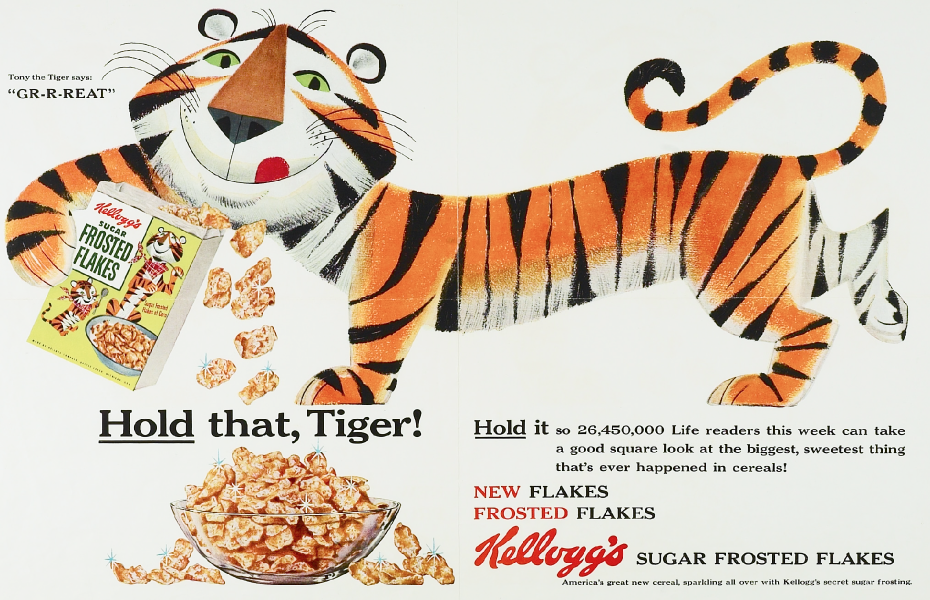
-
8. 시리얼에 우유보다 많은 비타민D가 들어있다? - YES
같은 양의 시리얼과 우유를 비교해보면 시리얼에 더 많은 비타민D가 함유되어 있습니다. 비타민D가 함유된 음식 중에 가장 간편하게 먹을 수 있는 우유의 경우 100g당 약1µg, 버터는 약1µg이 함유된데 반해 시리얼의 경우(켈로그 콘프로스트 기준) 8.3µg가 함유되어 있습니다.
-
9. 시리얼은 어린이용 간식이다? - NO
시리얼은 요양원에 있는 환자들의 건강식 대용으로 만들어졌습니다. 지방은 적고 다양한 비타민과 무기질을 함유하고 있으며, 콜레스테롤이 없어 균형 잡힌 한끼 식사로 영양학적인 설계가 잘 되어 있는 음식입니다.
-
10. 시리얼은 운동 전/후에 먹으면 좋다? - YES
운동을 하기 전 지방이 적고 단백질이 낮은 풍부한 탄수화물을 섭취하는 것은 운동 중 지구력 운동 수행 능력을 향상시켜줍니다. 운동 후 근육 생성을 위해서는 단백질과 적절한 양의 탄수화물을 함께 섭취해 주는 것이 효과적입니다. 일반적인 시리얼은 운동 전, 단백질 함량이 강화된 시리얼은 운동 후 섭취하게 되면 일반인들도 쉽게 필요한 영양소를 섭취할 수 있습니다.
씨앗에서 식탁까지
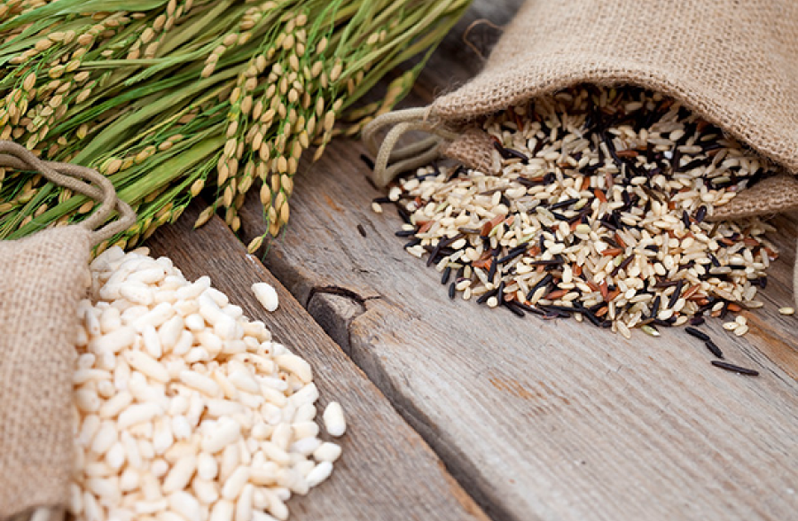
“켈로그가 알려주는 진짜 시리얼에 대한 모든 것”
세계 최대 시리얼 기업인 켈로그는 지난 114년간 쌓아온 깊은 역사와 노하우를 바탕으로 시리얼에 대한 잘못된 인식을 바로잡고자 시리얼이 지닌 간편함을 뛰어넘는 영양적인 가치를 전달하고자 합니다. 켈로그의 ‘씨앗에서 식탁까지’는 엄선한 곡물을 찌고 구워 소비자들의 식탁에 진정한 한끼 식사로 오르기까지 시리얼의 리얼한 여정입니다.
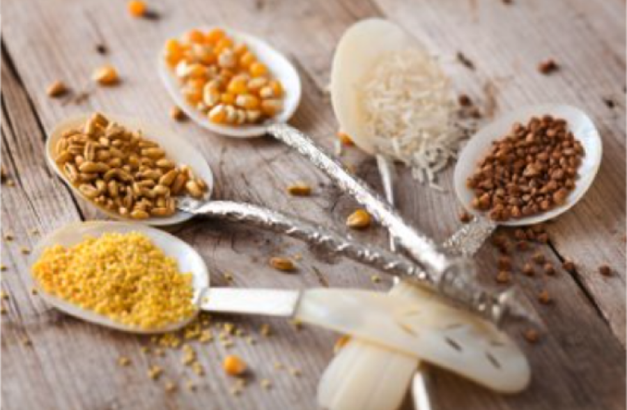
한 알의 곡물 씨앗을 고르기 위해 농부들과 협력을 하고, 정성이 가득한 한 줌의 곡물에 우리 몸이 필요로 하는 비타민, 미네랄 등 다양한 영양 성분을 담아 다양한 시리얼 제품으로 탄생시키는 과정이지요. 켈로그의 시리얼 제품은 여러분의 주방에서 음식을 조리하는 것과 동일한 방식으로 만들어집니다. 단지 그 규모와 양이 조금 더 크다는 것뿐이지요!
한 줌의 곡물이 맛있는 식사가 되고, 농장에서 여러분의 식탁으로 전달되기까지 맛있고
건강한 시리얼 한 스푼을 위해 켈로그는 항상 최선의 노력을 다하겠습니다.
영양정보 들여다보기
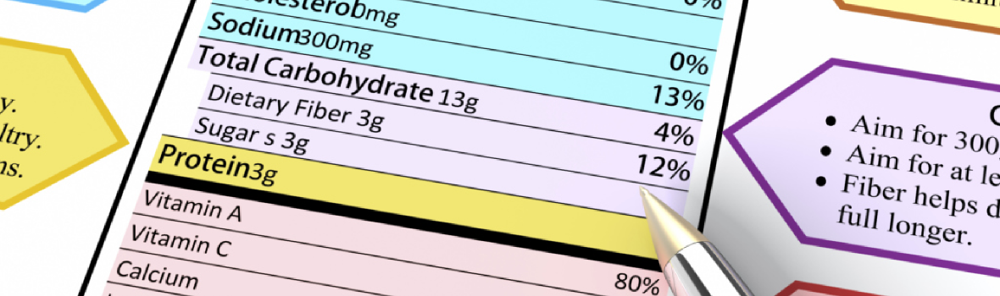
건강한 식단을 원할 때 정확한 식품에 대한 정보를 확인하는 것부터 시작해야겠지요? 다행히도 이러한 영양 정보를 찾는 일은 그리 어렵지 않습니다. 켈로그의 모든 제품은 제품별 영양 성분에 대한 정보를 표기하고 있으며, 여러분은 쉽고 간단하게 원하는 영양 정보를 확인하실 수 있습니다.
-
“영양표시”란?
가공식품에 들어있는 영양성분에 관한 정보를 표시하는 것으로, 소비자가 건강한 식사에 필요한 식품을 확인하고 잘 선택할 수 있도록 돕기 위한 것입니다.
-
“1일 영양성분 기준치”란?
일반인이 하루에 섭취해야 할 영양성분의 양을 정해 놓은 것입니다. (일반인 : 4세 이상 어린이 및 성인)
-
“1일 영양성분 기준치에 대한 비율(%)”이란?
영양성분의 평균적인 1일 섭취 기준량의 몇 %인가를 나타낸 것입니다.
-
“1회 섭취참고량”이란?
“1회 섭취참고량”은 만 3세 이상 소비계층이 통상적으로 소비하는 식품별 1회 섭취량과 시장조사 결과 등을 바탕으로 설정한 값을 말합니다. 1회 섭취참고량은 식약처의 식품의 유형에 따라 다르게 설정되어 있습니다. 1회 섭취참고량을 이해하는 것은 매우 중요합니다. 1회 섭취참고량을 섭취하였을 때 각 영양소별 섭취량을 기준으로 나에게 맞는 적절한 분량을 조절할 수도 있습니다.
- 시리얼류: 30g
- 곡류가공품 : 100g
- 체중조절용조제식품 : 40g
제품의 측면
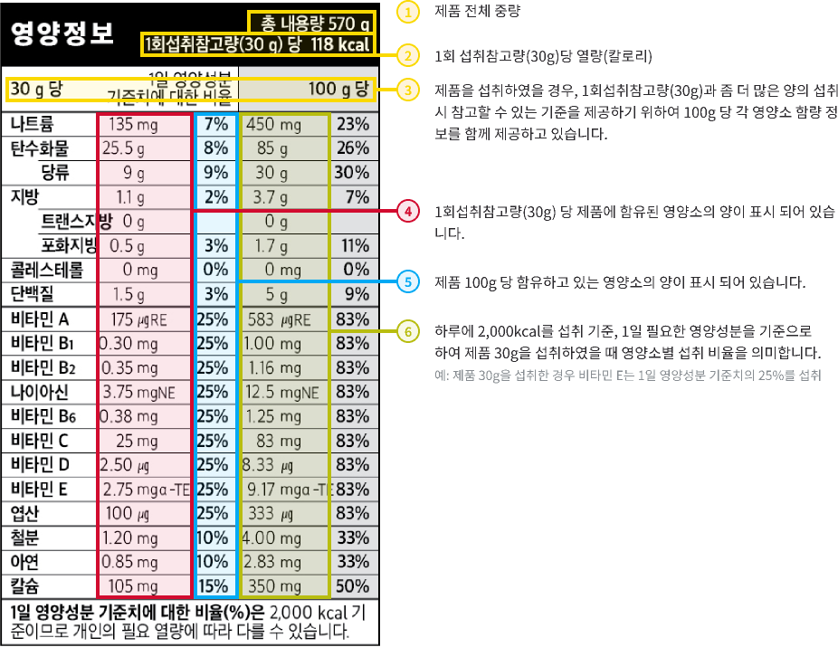FAQ
열량과 트랜스지방의 섭취 기준은 없나요?
1일 영양성분 기준치에 대한 비율(%)은 식약처가 제시한 ‘1일 영양섭취 기준치’를 기준으로 하고 있으며, 열량과 트랜스 지방의 기준치는 설정되어 있지 않습니다.
우유와 함께 먹었을 경우 영양성분의 정보는 없나요?
식약처에서는 제품 자체에 포함된 영양 정보만을 제공하도록 안내하고 있습니다. 추가적인 내용이 궁금하신 경우 소비자상담실(080-023-6411)로 연락주세요.
열량과 트랜스지방의 섭취 기준영양소 필요량(%)은 어린이와 어른 모두에게 동일하게 적용되나요?
어린이나, 임산부, 운동량, 활동량이 더 많은 사람 등 상황에 따라 영양소의 필요량은 다를 수 있습니다. 일반적인 기준을 의미하며, 참고 정보로 활용하시면 됩니다.
시리얼의 혁신
19세기에 첫 등장 후 지난 100년 동안 더 맛있고 건강하게 변화하는 시리얼 옥수수, 밀, 쌀 등 곡류를 주원료로 비타민류와 무기질류 등 영양성분을 강화 푸레이크, 오트밀, 그래놀라, 뮤즐리, 선식 등 다양한 형태의 가공식품을 지칭
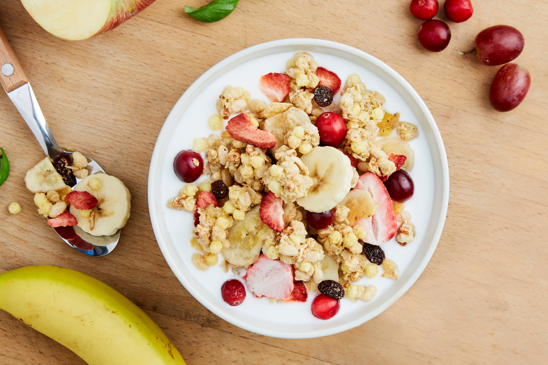
1863년에 발명된 꿀과 함께 오븐에 구운 통곡물, 그래놀라
시리얼은 1980년대 푸레이크로 국내 시장에 처음 진출했습니다. 그래서인지 국내에서는 시리얼 하면 푸레이크가 시리얼의 원조라는 생각이 지배적이지만 가장 먼저 개발된 형태의 시리얼은 1863년에 발명된 그래놀라입니다. 19세기 후반의 그래놀라는 통밀 가루를 반죽한 뒤 건조한 건강식으로 다소 딱딱한 형태였지만 20세기에 들어서며 그래놀라는 점차 통곡물에 꿀이나 시럽을 더해 오븐에 구운 뒤 말린 과일, 견과류와 곁들여 먹는 현대적인 모습으로 변화했습니다. 오늘날 그래놀라는 통곡물에 과일을 더한 만큼 비타민, 무기질, 식이섬유를 골고루 섭취할 수 있어 최근 국내 시장에서 인기가 높은 시리얼이기도 합니다.
익히지 않고 자연 그대로 먹는 유럽의 건강식 뮤즐리
그 다음 등장한 시리얼은 뮤즐리로 독일, 영국 등 유럽에서 특히 대중적으로 사랑받는 제품입니다. 뮤즐리는 1900년대 초 스위스 의사 막시밀리안 비르헤르-베너가 취리히에서 운영하던 건강 클리닉의 환자들을 위해 만들어졌습니다. 뮤즐리는 곡물, 과일, 견과류를 가공하지 않고 자연 건조시킨 뒤 혼합해 만드는 것이 특징입니다. 가공을 최소화한 뮤즐리는 원재료의 맛과 식감을 느낄 수 있으며 식이섬유가 풍부하고 꿀이나 시럽이 첨가되지 않아 열량과 당이 낮은 편입니다.
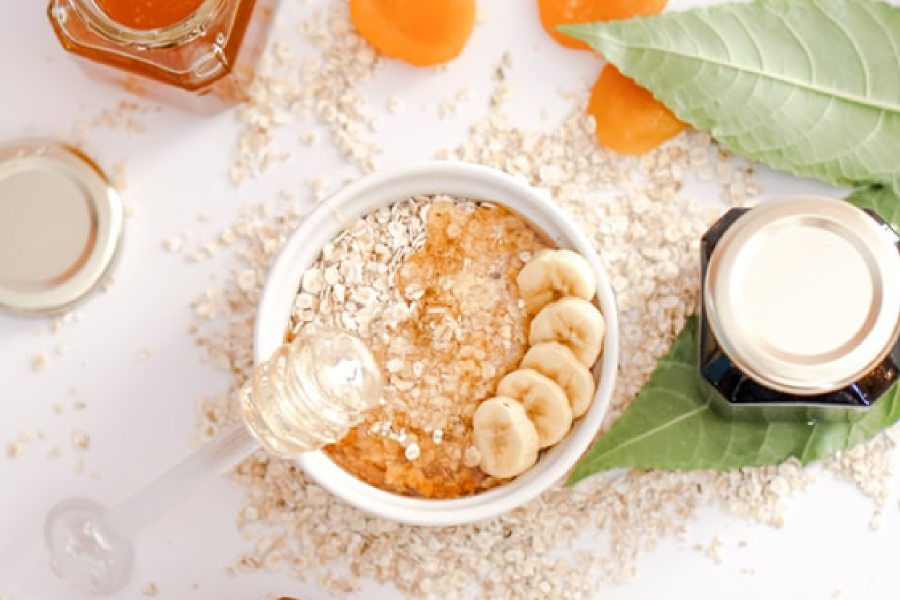
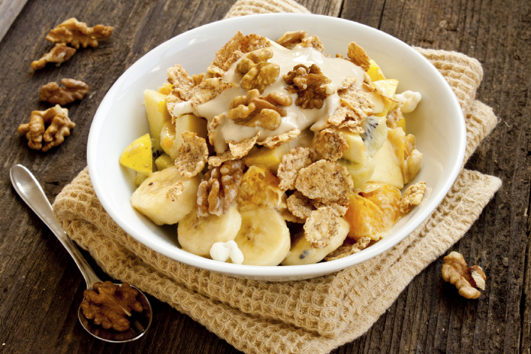
우연이 낳은 역사적인 발명, 푸레이크
뮤즐리 탄생과 비슷한 시기에 켈로그 창업자 윌리엄 키이스 켈로그와 그의 형 존 하비 켈로그 박사가 운영하는 요양원의 환자들을 위한 건강 식품으로 푸레이크를 발명하면서 시리얼의 대중화에 기여했습니다. 소화가 잘 되는 빵을 개발하던 켈로그 형제는 우연히 밀가루 반죽이 건조되어 생긴 얇은 형태의 밀 푸레이크를 발견했고 이를 구운 것이 푸레이크의 시초입니다. 푸레이크는 옥수수를 주성분으로 보리, 호밀 등 곡물을 반죽한 뒤 얇게 압축하고 구워 낸 형태로, 대표적인 푸레이크 제품으로는 켈로그 콘푸로스트가 있습니다.
에너지바, 컵시리얼 등 혁신적인 신제품 개발 지속
켈로그는 “건강한 세상을 만들기 위해 품질 좋은 제품을 만들어야 한다”는 창업자 W.K. 켈로그의 강한 신념 아래 새롭고 혁신적인 제품을 지속적으로 개발하고 있습니다. 또한 발 빠르게 변화하는 시장트렌드에 맞춰 영양뿐만 아니라 간편함을 더한 다양한 종류의 시리얼을 비롯해 에너지바, 컵시리얼 제품들도 연이어 선보이고 있습니다. 특히 켈로그는 바쁜 일상에서 영양과 건강을 챙기려는 현대인들의 생활 패턴에 맞춰 에너지바를 개발했습니다. 에너지바는 한 손에 쏙 들어오는 크기로 휴대하기 편리하며, 언제 어디서나 간편하게 영양을 섭취할 수 있는 것이 특징입니다.
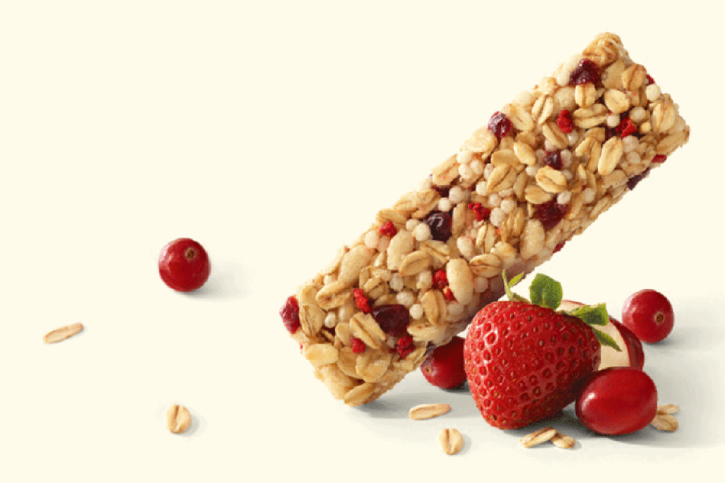